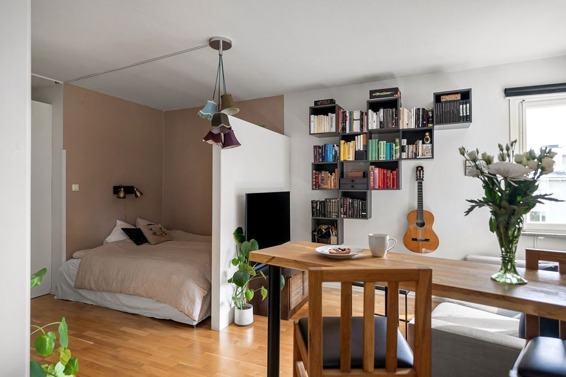

Stratégies pour créer de l'espace caché dans votre petit appartement

Photo: Lisa Anna / Pexels
« Créer de l'espace caché » signifie surtout utiliser des endroits inutilisés pour ranger discrètement. Voici des idées simples et sûres, sans toucher à la structure du logement.
1. Sous le lit et le canapé
Des tiroirs ou des boîtes plates sous le lit permettent de ranger linge, chaussures et couvertures. Laissez la ventilation libre autour des radiateurs et des bouches de chauffage.
2. Derrière les portes
Un organisateur suspendu ou un portemanteau à crochets utilise un espace perdu. Vérifiez que la porte se ferme encore correctement.
3. En hauteur
Des étagères au-dessus des portes ou près du plafond servent pour les objets légers et rarement utilisés. Fixez-les correctement dans le mur (voir notre guide sur les étagères murales).
4. Meubles à double usage
Un pouf avec rangement, un banc-coffre, un lit avec tiroirs ou une table basse avec compartiment cachent beaucoup sans prendre plus de place.
5. Dans les coins et les recoins
Des étagères d'angle ou des meubles étroits sur roulettes exploitent les coins. Ne bloquez pas l'accès au panneau électrique, au compteur, à la chaudière, au chauffe-eau, aux issues ni aux détecteurs de fumée.
À ne pas faire
- Percer ou ouvrir des murs ou des planchers sans l'accord du propriétaire, ni vérification des fils et des tuyaux.
- Cacher des objets contre une source de chaleur ou dans un espace sans aération.
- Stocker des produits inflammables, de l'essence, des bonbonnes de propane ou des produits chimiques dans le logement.
Gardez un système simple
Étiquetez les contenants et notez ce qu'ils contiennent. Un espace caché n'est utile que si vous retrouvez facilement ce que vous y avez mis.
Avec ces astuces, un petit appartement paraît plus dégagé sans aucun risque pour la sécurité.
Produits recommandés
En tant que Partenaire Amazon, je réalise un bénéfice sur les achats remplissant les conditions requises.